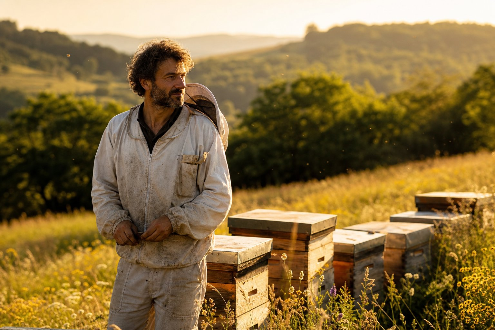
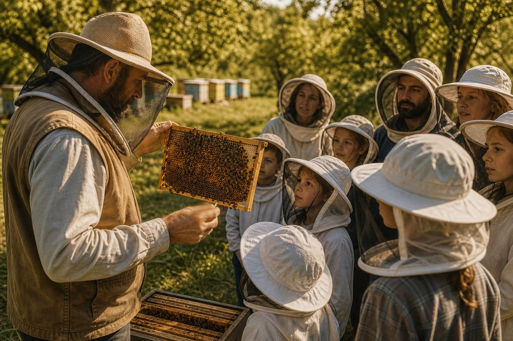

Best-seller
Miel d'acacia
Le plus délicat. Limpide, floral, d'une douceur presque transparente.
- Fleur d'oranger
- Vanille fraîche
- Amande douce
dès 9,50 €
Apiculture artisanale · Monts du Lyonnais
Cent quatre-vingts colonies, neuf ruchers sédentaires posés entre les prairies et la forêt. Nous récoltons à froid, nous ne mélangeons jamais deux floraisons, et nous ouvrons nos ruches à qui veut comprendre.

Récolte en cours
Tilleul 2026
Extrait le 14 juillet · 212 pots
Les essentiels
Trois miels qui résument notre année, un coffret pour les découvrir tous, et la visite qui change définitivement la façon dont on regarde une abeille.
Le plus délicat. Limpide, floral, d'une douceur presque transparente.
dès 9,50 €
Le caractère. Ambré sombre, boisé, franchement tannique.
dès 8,50 €
Le mentholé. Frais, balsamique, étonnamment aromatique.
dès 8,90 €

La plus demandéeAtelier
Nous ouvrons une ruche devant vous. Vous verrez la reine, le couvain, les réserves — et vous entendrez le bruit d'une colonie qui va bien.
Réserver une visite
Quatre miels de 125 g et leur fiche de dégustation, dans un étui en carton recyclé. Le meilleur moyen de trouver son préféré.
29,00 €
La vente en ligne arrive au printemps 2027. En attendant, commandez par téléphone ou e-mail — ou passez nous voir à la miellerie.